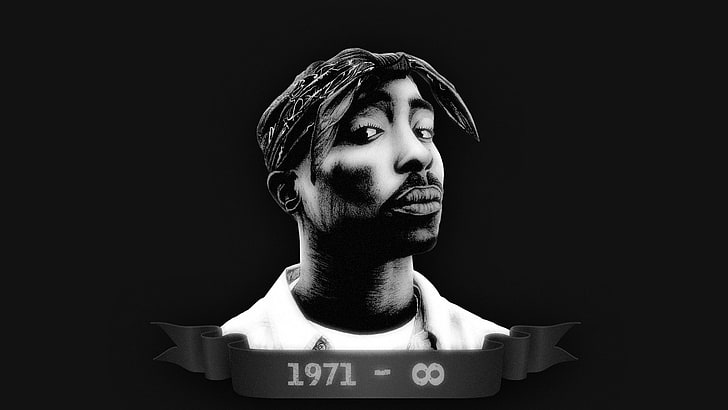

Tupac Shakur
You are reading a tribute page of Tupac.

2Pac image artwork black & white. 2Pac wearing a bandana laced in Tupac style.
You are reading a tribute page of Tupac.
2Pac image artwork black & white. 2Pac wearing a bandana laced in Tupac style.
2Pac legacy will never end. He lives in his fans hearts. Read more about Pac here.